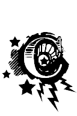

uộc chiến tranh Việt Nam hiện nay là một cuộc chiến tranh vô cùng tàn khốc, bắt nguồn từ nhiều nguyên nhân, trong đó có nguyên nhân gần và nguyên nhân xa.
Nguyên nhân gần là sự tranh cướp quyền hành cai trị giữa các phe phái, vì sự tranh cướp này mà cuộc chiến thay hình đổi dạng, từ chiến tranh dân tộc, chiến tranh giải phóng, chiến tranh cách mạng trở thành chiến tranh chủ nghĩa, trong đó hai lý tưởng Quốc gia và Cộng sản tiêu biểu nhất, đối chọi nhau, va chạm nhau, phát sinh ra giết chóc - tàn phá.
Dân tộc Việt Nam trải hàng nghìn năm nô lệ giặc Tàu, một trăm năm nô lệ giặc Tây, với một thời gian dài bị bọn phong kiến chà đạp bóc lột, nên ai cũng khao khát Tự Do và Độc Lập,
Mùa thu năm Ất Dậu 1945, lợi dụng cơ hội ngàn năm một thuở, cuộc Đệ Nhị Thế Chiến làm cho các nước thực dân tư bản châu Âu kiệt quệ, phong trào giải phóng bùng nổ rầm rộ khắp năm châu, dân tộc Việt Nam cũng vươn mình lên, đấu tranh cướp chính quyền, đánh đuổi phát xít xâm lược, đạp đổ chế độ quân chủ chuyên chế.
Cuộc khởi nghĩa cướp chính quyền mùa Thu năm 1945 là công lao của toàn dân, do lòng yêu nước và sục sôi căm thù thực dân - phát xít thúc đẩy; nhưng ngay lúc đầu, nó đã nảy sinh ra mầm mống tranh cướp và đi đến chỗ đấu tranh cục bộ.
Vừa cướp được chính quyền, thực lực chưa có gì, ngân khố thì trống rỗng, lại trông thấy bao nhiêu khó khăn bày ra trước mắt mà mầm mống tranh cướp cục bộ đã nảy sinh, đủ thấy viễn ảnh chiến tranh không thể tránh thoát.
Nói về những khó khăn của Việt Nam vào mùa Thu năm 1945 thì thật nhiều, nhưng ở đây chỉ tạm kể mấy khó khăn chính:
KINH TẾ
Một trăm năm nô lệ thực dân Pháp, người dân Việt Nam đã bị bóc lột đến cùng cực, chỉ có một thiểu số dựa vào thế lực Tây là giàu, còn đa số bạch đinh khố rách áo ôm, thuộc loại bần cố nông với hai bàn tay trắng.
Việt Nam là một xứ tài nguyên rất phong phú, cả dưới đất lẫn trên rừng. Trên rừng đủ thứ gỗ quý như quế, lim, kiền kiền, gõ, trắc, mun v.v… còn dưới đất thì có mỏ vàng ở Bồng Miêu, mỏ kẽm ở Bắc Bộ, mỏ than ở Hòn Gai, Nông Sơn v.v… Tất cả những tài nguyên thiên nhiên này đều do thực dân Pháp độc quyền khai thác, còn người Việt Nam thì làm phu phen, bỏ xác trên rừng già hay vùi thây dưới hầm mỏ.
Việt Nam cũng là một xứ chuyên sống về nông nghiệp. Ruộng đất ở Bắc phần và Trung phần chẳng có là bao, nhưng ở Nam phần thì cò bay thẳng cánh.
Luá gạo sản xuất ở Nam phần Việt Nam nhiều vô kể, đứng hạng nhất nhì tại châu Á, nhưng số gạo thóc đó không được dùng để nuôi dân nghèo đói miền Trung hay miền Bắc, mà bi các công ty mễ cốc thực dân Tây xuất cảng ra nước ngoài mỗi năm hàng triệu tấn.
Nếu quần chúng Việt Nam vốn rộng lượng, tạm chấp nhận phần nào sự bóc lột của bọn thực dân, thì hẳn không thể tha thứ chánh sách bần cùng hoá người dân Việt Nam của chúng được. Chính sách đó nằm trong một âm mưu thâm độc, chẳng những không để dân Việt Nam ngóc đầu lên mà còn đi đến chỗ kiệt quệ, phải tự ký giấy giao kèo, bán mạng sống mình, mạng sống gia đình mình cho bọn thực dân chủ hầm mỏ, chủ đồn điền, vừa làm tôi mọi, trong nước, vừa làm toi mọi ở Tân Đảo Nouvelle Calédonie.
Những năm trước chiến tranh, than đá và cao su là hai nguồn lợi lớn của bọn tư bản thực dân, sau lúa gạo. Than đá thì khai thác ở Hòn Gai ngoài Bắc phần, còn cao su thì được trồng tại những vùng đất đỏ thuộc Nam phần.
Hầm mỏ là nơi chôn vui thân xác người dân nghèo đói vô tội Việt Nam đã đành, nhưng các đồn điền cao su cũng là chỗ đầy ải chết chóc không kém. Người dân Việt Nam nào vô phúc, đã ký giao kèo đi làm phu đồn điền hay phu khai thác hầm mỏ cho tư nhân thực dân thì kể như chết cả đời mình, tuyệt tự cả giòng giống.
Trước đây, hồi còn thực dân cai trị, trong nhiều bài báo, nhiều cuốn sách nói về chính sách hà khắc ở Đông Dương, chính những người Pháp cấp tiến đã tố cáo tội ác của những tên chủ hầm mỏ, chủ đồn điền, bảo rằng mỗi gốc cây cao su trồng ở Nam phần Việt Nam, sỡ dĩ tươi tốt, sản xuất nhiều mủ là nhờ bón bằng thây người Việt Nam!
Tội ác của thực dân Pháp ở Đông Dương thật là tầy đình, thật là kinh khủng, không bút nào tả xiết. Tội ác đó càng chồng chất hơn vào những năm cuối cùng từ 1940 đến 1945, và sau đó là trong cuộc chiến tranh Việt - Pháp 1945-1954.
Năm 1940, Pháp bị Quốc xã Đức đánh bại nên thế lực của thực dân ở các xứ thuộc địa cũng yếu hẳn đi. Lợi dụng cơ hội, quân đội Nhật Bản ùn ùn kéo vào Đông Dương, lấy cớ mượn đường hoả xa Hà Nội - Vân Nam để đánh bọc hậu Tưởng Giới Thạch, nhưng kỳ tình nhằm hất cẳng Pháp, chiếm lấy quyền cai trị.
Thời kỳ này, dân Việt Nam bị một cổ đôi tròng, vừa phải cung phụng thực dân Pháp, vừa phải chu cấp cho quân đội phát xít Nhật.
Phát xít Nhật tuy cũng giòng giống da vàng, nhưng chính sách cai trị có phần hà khắc hơn thực dân Pháp nhiều.
Trước hết, chúng vơ vét hết vàng bạc của thực dân Pháp sau bao nhiêu năm tích luỹ, khiến đồng bạc do Banque de L’ Indochine phát hành trước kia mất rất nhiều giá trị, và được thay thế vào đó bằng một thứ giấy bạc mới chẳng có gì bảo đảm mà người đương thời quen gọi là “Đồng bạc Nhật”.
Kế đến, quân đội Nhật, qua tay thực dân Pháp, bắt nhân dân Việt Nam đóng thêm thuế, làm thêm sâu, lên tận vùng cao nguyên Ban Mê Thuột hay miền thượng du Bắc Phần đắp đường, đào hầm, xây cất đồn lũy.
Cay nghiệt hơn, vì nhu cầu chiến tranh, quân đội Nhật còn bắt buộc người dân Việt Nam phải dành phần lớn diện tích ruộng đất để trồng cây đay, chứ không được trồng lúa, khoai, ngô, đậu.
Có nhiều địa phương, chính giữa lúc lúa khoai ngô đậu vừa mới trồng, đang bắt đầu tốt lên, xanh tươi hứa hẹn thì được lệnh phải nhổ sạch để trồng cây đay thay vào, khiến người dân Việt Nam, từ ông già bà lão đến trẻ con, một tay nhổ khoai, nhổ ngô, một tay gạt nước mắt, vì trông thấy ông thần đói đe doạ ngay trước mặt.
Nên biết rằng công việc trồng cay đay khổ nhọc gấp bội công việc trồng ngũ cốc. Từ lúc gieo hạt cho tới khi chặt được phải mất gần 6 tháng. Chặt xong, phải ngâm cay đay xuống sông, xuống hồ hay xuống ao chừng vài chục ngày cho tróc vỏ rồi vớt lên, bóc ra, phơi khô, đập dập thành sợi, xong bó lại, đem lên quận, lên huyện nộp cho chính quyền.
Vi sông ngòi, ao lạch bị dùng làm chỗ ngâm đay nên đâm ra nạn thiếu nước sạch để tắm giặt, và nạn khan hiếm tôm cã cũng xuất hiện, bởi chẳng có một sinh vật nào có thể sống nổi dưới làn nước đã bị ngâm cay đay.
Phần lớn diện tích đất đai đã bị bắt buộc phải dành đề trồng cay đay, chính quyền thực dân Pháp, vì sự ép buộc của quân đội Nhật, lại bắt nhân dân Việt Nam trồng thêm thuốc lá, nên xảy ra nạn đói trầm trong năm Ất Dậu 1945.
Nạn đói này hoành hành dữ dội, chưa từng thấy trong lịch sử nước nhà, chỉ mấy tháng trời, giết hại khoảng hai triệu người từ Trung ra Bắc.
Nhắc lại nạn đói năm Ất Dậu 1945, những người Việt Nam bị chứng kiến hẳn không khỏi rùng mình. Đói đâu mà đói ghê gớm, đói đến nỗi có những trường hợp phải ăn cả thịt người, thật là một chuyện ít ai ngờ, tưởng chỉ xảy ra trong rừng già Phi Châu, nơi có lắm bộ lạc man rợ.
Vì bị bóc lột, bị bần cùng hoá, bị chết đói, chết khát như thế nên mùa thu 1945, khi quần chúng Việt Nam nổi lên cướp chính quyền thì chỉ còn da bọc xương, trơ hai bàn tay trắng.
Quần chúng từ hai bàn tay trắng, tiền trong ngân khố quốc gia chỉ còn lại còn lại 1.230.720 đồng, nhưng có tới 586 ngàn đồng bạc rách, không lưu hành được, Chính phủ lâm thời vừa mới thành lập còn phải cung phụng nuôi dưỡng hơn 200 ngàn quân Trung Hoa Quốc Gia do tướng Lư Hán chỉ huy, vừa mới tràn vào Bắc Việt ngày 28-8-1945 theo Hiệp ước Postdam để giải giới quân đội Nhật Bản từ vĩ tuyến 16 trở ra, nên “tang gia” vô cùng bối rối.
Quân đội của tướng Lư Hán quả thật là một gánh nặng về mọi mặt đối với chính phủ lâm thời Việt Nam hồi bấy giờ. Một đằng, họ buộc Việt Minh phải đổi cho họ hàng tháng một số tiền lớn bạc Đông Dương để quân lính họ chi dùng. Đằng khác, họ tự ý đưa bạc Quan, Kim, Quốc tệ vào, làm xáo trộn nền tài chính Việt Nam. Hai thứ bạc này chẳng có chút giá trị nào trên thị trường quốc tế, nó không khác gì mớ giấy lộn, nhưng người dân Việt Nam vẫn phải bắt buộc tiêu dùng, và sau này, khi quân đội của tướng Lư Hán rút về rồi, nếu có ai còn lưu giữ ít nhiều thì chỉ biết đem ra đốt.
Đạo quân của tướng Lư Hán, trên danh nghĩa là giải giới quân đội phát xít Nhật, những trên thực tế, hình như họ còn được trao phó nhiệm vụ tiếp xúc, nâng đỡ các phần tử quốc gia - đặc biệt Quốc Dân Đảng Việt Nam - để ngăn cản sự bành trướng của Đảng Cộng sản.
Lúc này, bên Trung Hoa lục địa, cuộc kháng chiến chống Nhật vừa kết thúc thì mầm nội chiến đã phát sinh, hai bên Quốc - Cộng đánh nhau kịch liệt tại vùng Đông Bắc nước Tàu, và ở miền Nam, Hồng quân cũng lập nhiều chiến khu với ý định đánh úp sau lưng quân đội Tưởng.
Bởi thế, vấn đề ngăn chặn Cộng sản Việt Nam là một điều tối cần thiết đối với Trung Hoa Quốc gia, vì nếu ở Việt Nam, Cộng sản cướp được chính quyền thì đương nhiên trở thành một hậu cứ vững chắc của Hồng Quân Trung cộng.
Thực lực quân sự của quân đội Lư Hán không đủ làm Việt Minh sợ, vì đội quân này ô hợp, bạc nhược. Điều mà Việt Minh sợ là có nhiều phần tử quốc gia chống cộng đã dựa vào sự biến diễn của đạo quân này để hoạt động ngấm ngầm hoặc công khai, giành thế lãnh đạo với Việt Minh.
Những phần tử quốc gia này, có kẻ hoạt động trong nước từ trước tới nay nhưng cũng có kẻ bấy lâu sống lưu vong bên Trung Hoa, và vừa mới theo chân đạo quân Lư Hán trở về về nước, trong số có cụ Nguyễn Hải Thần, một nhà cách mạng lão thành, được Việt Minh mời giữ chức Phó Chủ Tịch nhà nước.
Để vô hiệu hoá mọi hoạt động chống Cộng của phe quốc gia, và để có thể tiêu diệt các phần tử này, Việt Minh bắt buộc phải đút lót - hối lộ đạo quân của của tướng Lư Hán; hủ hoá thành phần lãnh đạo chỉ huy chính trị và quan sự của đạo quân này, dồn họ vào thế “ăn của chùa ngọng miệng”, không còn thực thi nhiệm vụ ngấm ngầm giúp đỡ Quốc dân đảng Việt Nam nữa,
Ngoài việc cung phụng đạo quân Lư Hán, Việt Minh còn phải bắt tay ngay vào công việc tổ chức chính quyền và phát triển cơ sở Đảng cộng sản trên khắp toàn quốc.
Công việc trước mắt thì nhiều, mà tiền trong ngân khố lại chẳng có; Việt Minh cũng chẳng hy vọng gì vào sự viện trợ kinh tế của Hồng quân Trung Hoa và Nga sô hay bất cứ quốc gia nào, vì chủ lực của Trung Cộng thì ở miền Bắc nước Tàu, rất xa xôi cách trở với Việt Nam, họ lại đang phải dồn hết trí lực vào công cuộc đánh nhau với Trung Hoa Quốc Gia để chiếm chính quyền ở Hoa Lục, nên không thể cứu viện cho Việt Minh.
Còn Nga sô, tuy là nước thắng trận trong Đệ nhị thế chiến, nhưng cũng bị thiệt hại khá nhiều, và đang trong thời kỳ ráo riết tranh dành ảnh hưởng với Hoa Kỳ ở Đông Âu cũng như ở vùng Đông Bắc nước Tàu nên chưa thể viện trợ giúp Việt Minh.
Trong khi đó, những khó khăn nội bộ chưa giải quyết được gì, và Việt Minh đang rất cần tiền thì quân đội Pháp lại theo gót quân đội Anh đổ bộ vào Sài gòn rồi kéo thốc xuống miền Lục tỉnh, gây chiến tranh.
Việc quân đội Pháp bất thần trở lại Đông Dương, đặt thêm cho Việt Minh một khó khăn mới hết sức to lớn, nhất là về mặt kinh tế - tài chính, vì muốn đánh lại đạo quân này thì cần phải có nhiều súng ống, đạn dược, mà muốn mua súng ống đạn dược từ nước người thì phải có ngoại tệ.
Để giải quyết được phần nào hay phần ấy những khó khăn kinh tế trong lúc đầu, Việt Minh phải dùng đủ mọi hình thức hầu thu góp tiền bạc, của cải trong nhân dân. Một trong các hình thức thường được Việt Minh phát động lúc bấy giờ là tổ chức lạc quyên, bán đấu giá ảnh Hồ Chí Minh theo lối Mỹ (ai trả giá nào là phải xỉa tiền ngay giá ấy);đặt hủ “ gạo cứu quốc’ tại mỗi gia đình, gia đình nào cũng thế, ngày 3 bữa ăn, phải bốc 3 nắm gạo bỏ vào hũ, cuối tháng có cán bộ xã ấp đi đổ những hũ đó, gom góp gạo lại một hũ rồi chở đi. Ngoài ra, Việt Minh còn tổ chức “Tuần lễ vàng”, khuyến khích mọi người giàu có hãy dùng vàng vào công cuộc cứu quốc, với các khẩu hiệu như: “Đeo chi nặng cổ nặng tay, hãy đem giúp nước hỡi ai có vàng!”
Kết quả một tuần lễ lạc quyên rất khả quan, Việt Minh thu được lối trên hai chục triệu bạc Đông Dương và khoảng hơn bốn trăm ki lô vàng.
Hai chục triệu bạc Đông Dương và bốn trăm ki lô vàng hồi cuối 1945, giá trị thật lớn, tuy không thể giúp một tân chính quyền trang trải mọi chi tiêu cho ngân sách quốc gia, nhưng ít ra nó cũng giúp cấp thời giải quyết một số khó khăn. Đặc biệt bạc Đông Dương thì dùng để đổi cho quân đội của tướng Lư Hán; còn vàng thì một phần đút lót hối lộ cho tướng tá Trung Hoa, và phần còn lại, thay ngoại tệ mua khí giới.